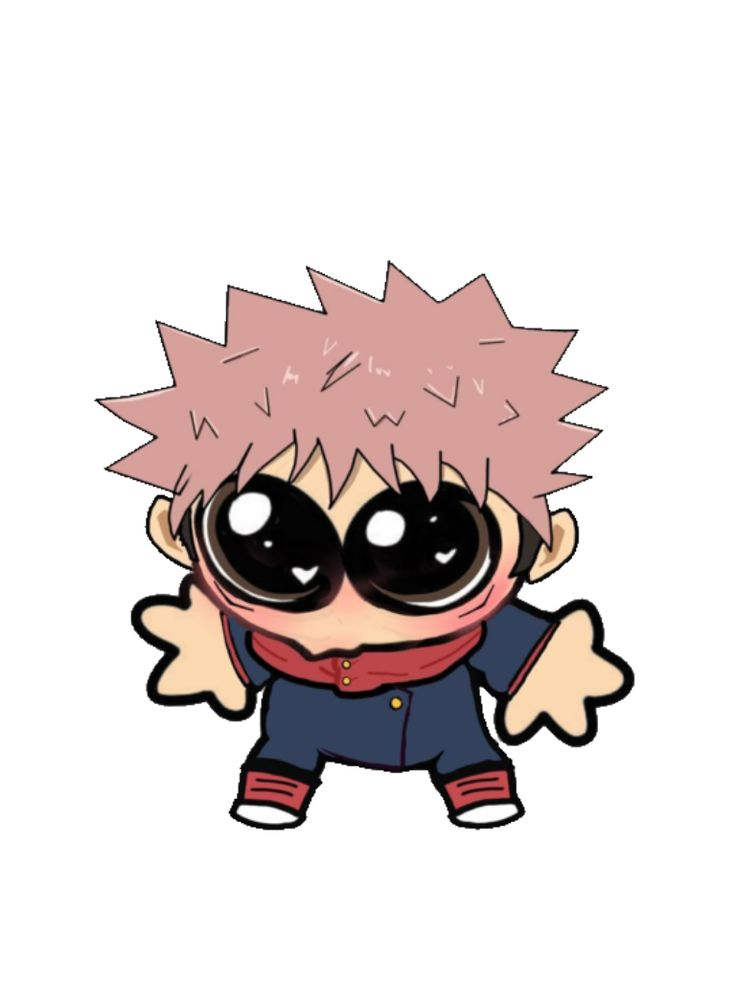

Jujutsu Kaisen es un anime y manga de acción y fantasía oscura creado por Gege Akutami. La historia sigue a Yuji Itadori, un estudiante que se ve envuelto en el mundo de los hechiceros y maldiciones tras consumir un objeto maldito: un dedo de Sukuna, una de las entidades más peligrosas.
